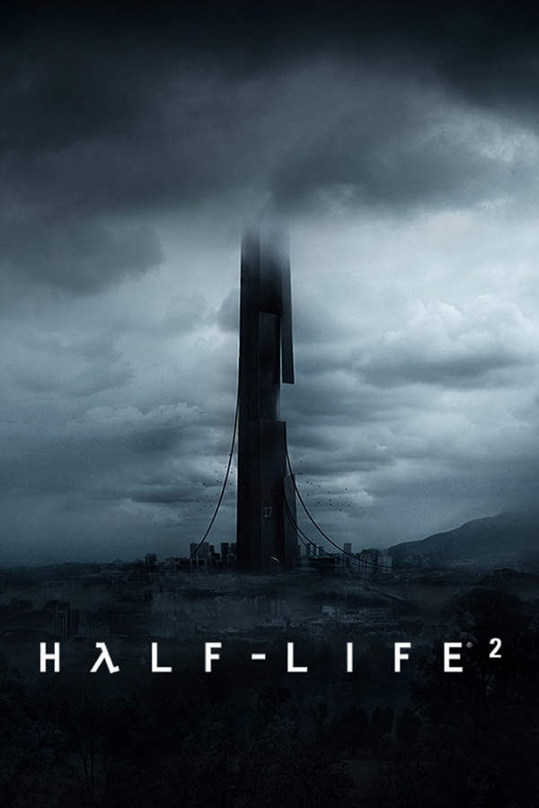

Half-Life 2
Half-Life 2
Detalhes
|  | |
| Tempo de jogo | 8m 0s |
| Última Atividade | 04/02/2024 20:28:27 |
| Adicionado | 09/03/2025 22:47:35 |
| Modificado | 10/03/2025 1:48:56 |
| Status de Conclusão | Jogado |
| Biblioteca | Steam |
| Fonte | Steam |
| Plataforma | PC (Windows) |
| Data de Lançamento | 16/11/2004 |
| Pontuação da Comunidade | 91 |
| Avaliação da crítica | 93 |
| Pontuação do Usuário | |
| Gênero | First-person shooter |
| Desenvolvedor | Valve |
| Editor | Valve |
| Funções | Single Player |
| Links | Wikipedia |
| Tag | [EMT] Video Micro missing |
Descrição
Half-Life 2 is a 2004 first-person shooter (FPS) game developed and published by Valve Corporation. It was published for Windows on Valve's digital distribution service, Steam. Like the original Half-Life (1998), Half-Life 2 is played entirely from a first-person perspective, combining combat, puzzles, and storytelling. It adds features such as vehicles and physics-based gameplay. The player controls Gordon Freeman, who joins a resistance to liberate Earth from the Combine, a multidimensional alien empire.
Half-Life 2 was created using Valve's Source game engine, which was developed simultaneously. Development lasted five years and cost US$40 million. Valve's president, Gabe Newell, set his team the goal of redefining the FPS genre. They integrated the Havok physics engine, which simulates real-world physics, to reinforce the sense of presence and create new gameplay. They also developed the characterisation, with more detailed character models and animations.
Valve announced Half-Life 2 at E3 2003 with a release date of September of that year. They failed to meet the release date, leading to fan backlash. In October, the unfinished source code was published online, leading to more backlash and damage to the team's morale.
Half-Life 2 was released on Steam on November 16, 2004. It won 39 Game of the Year awards and, like its predecessor, has been cited as one of the most influential FPS games and among the best games ever made. It was ported to the Xbox, the Xbox 360, the PlayStation 3, macOS, and Linux. By 2011, it had sold 12 million copies. Half-Life 2 was followed by the free extra level Lost Coast (2005) and the episodic sequels Episode One (2006) and Episode Two (2007). In 2020, after canceling Episode Three and several further Half-Life projects, Valve released a prequel, Half-Life: Alyx.